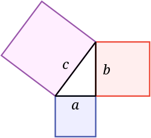

Pythagorean Theorem
Terminology:
Right angle: an angle measuring exactly 90 degrees
Right triangle: a triangle that has a right angle
Leg: a side adjacent to the right angle in a right triangle
Hypotenuse: the side of a opposite of the right angle in a right triangle
The Pythagorean theorem is a statement that describes the sides of a right triangle. The theorem says that length of the hypotenuse squared is equal to the sum of the squared lengths of the legs.
Formula:
a2 + b2 = c2 where 'c' is the hypotenuse of a right triangle and 'a' and 'b' are the legs
Visualization:
The Pythagorean theorem can be visualized using the areas of squares built off the sides of a right triangle. The area of a square 'a' built of the hypotenuse is equal to the sum the areas of squares built of the legs 'a' and 'b'.

Example Use:
A latter is needed to access the roof of a building with a height of 30 feet. The side of the building is forms a right angle with the ground. If a 50-foot latter is set against the building, with the top touching exactly the top of the building, what is the distance from the base of the latter to the base of the building.
Leg 1 = height of the building = a = 30'
Leg 2 = distance from the base of the latter to the base of the building = b = ?
Hypotenuse = length of the latter = c = 50'
The formula says a2 + b2 = c2, but we have 'a' and 'c' so we must rearrange the formula.
b^2=c^2-a^2
The formula is now set up to find b2, but we are just looking for 'b'
b= √(c^2-a^2 )
Now that the equation is set equal to the side we are looking for, we can plug in the values
b= √(50^2 - 30^2 )
b= 40